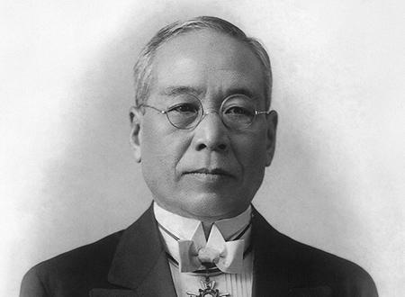
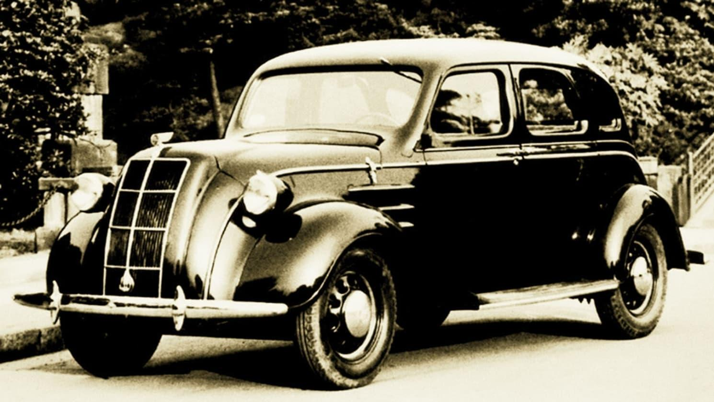
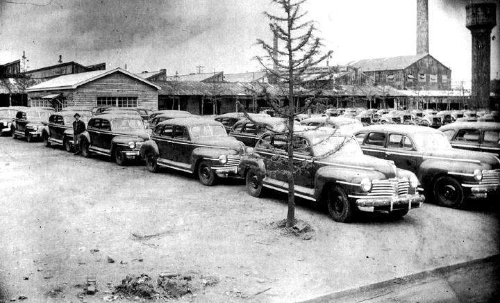
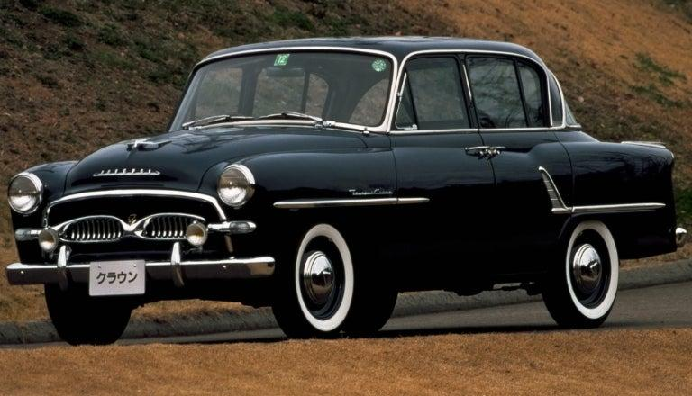
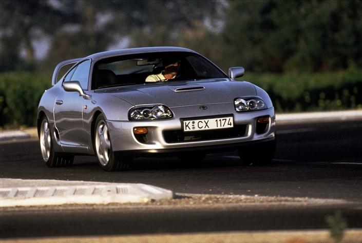
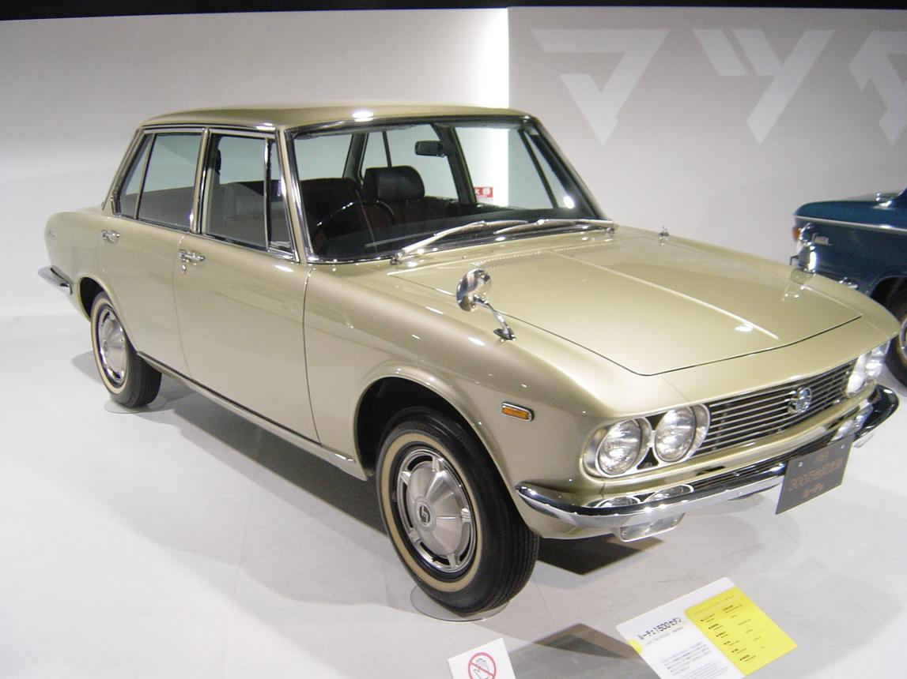
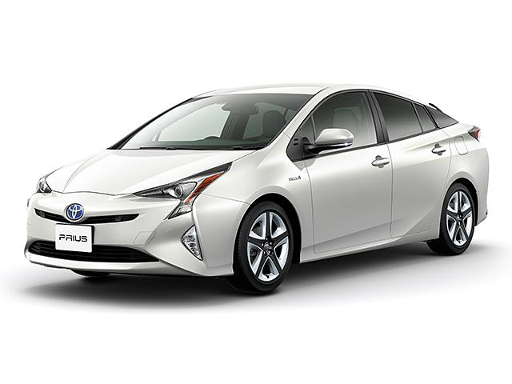
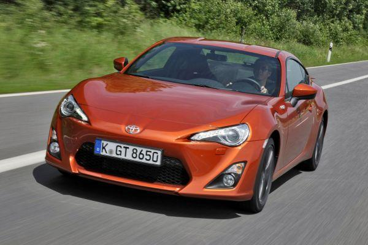
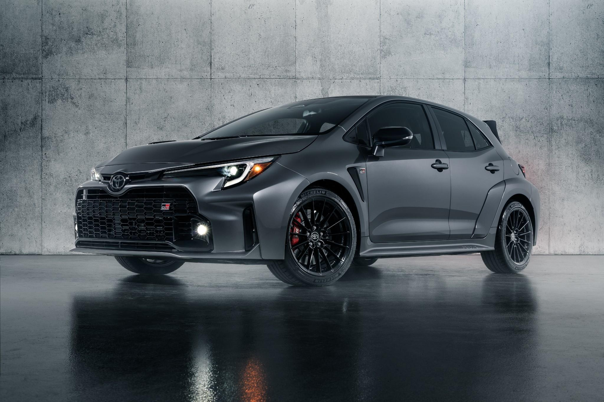
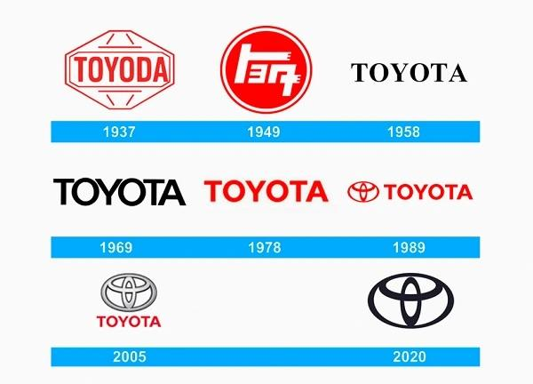

Au départ, Toyota ne fabriquait pas de voitures. En 1926, Sakichi Toyoda crée une entreprise spécialisée dans les métiers à tisser automatiques. Son fils, Kiichiro Toyoda, est passionné d'automobile et décide de développer cette nouvelle activité. En 1936, Toyota présente sa première voiture de série, la Toyota AA.

En 1937, Toyota Motor Corporation est officiellement créée au Japon. Le nom « Toyoda » devient « Toyota », car il est plus facile à écrire en japonais et est considéré comme plus porte-bonheur.

Pendant la Seconde Guerre mondiale, Toyota produit principalement des camions militaires pour l'armée japonaise. À la fin du conflit, l'entreprise connaît une période difficile mais parvient à survivre.

Après la guerre, Toyota relance la production de voitures civiles. En 1951, elle lance le Land Cruiser, un tout-terrain devenu une légende. En 1955, la Toyota Crown devient la première grande berline de la marque.

En 1966, Toyota présente la Corolla, qui deviendra la voiture la plus vendue de toute l'histoire de l'automobile avec plus de 50 millions d'exemplaires. Durant les années 1970 et 1980, Toyota s'impose dans le monde entier grâce à la qualité, la fiabilité et la faible consommation de ses véhicules.

En 1989, Toyota crée la marque de luxe Lexus afin de concurrencer les constructeurs allemands haut de gamme. La première Lexus LS400 impressionne par son confort, sa qualité et son silence.

En 1997, Toyota lance la Prius, la première voiture hybride produite en grande série. Cette innovation révolutionne le marché automobile et fait de Toyota un leader mondial des véhicules hybrides.

Toyota développe de nombreux modèles célèbres comme :
En 2008, Toyota devient le premier constructeur automobile mondial en nombre de véhicules vendus.

Aujourd'hui, Toyota est l'un des plus grands constructeurs automobiles au monde. La marque investit dans :
Elle développe également la gamme sportive GR (Gazoo Racing) avec des modèles comme la GR Yaris, la GR Corolla et la GR Supra.

